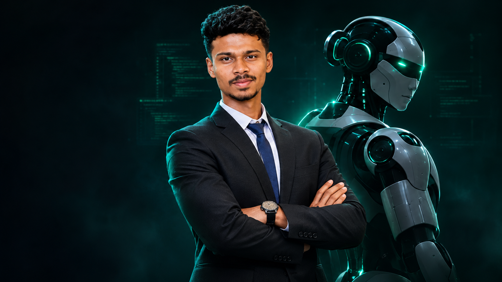

⌁01
Smart Driving License
Road-safety and digital licence workflows built on computer vision and connected systems.
View repository ↗
> Computer Vision Engineer
I'm Mohamed Minhaj, an AI engineer and robotics developer. I design and deploy computer-vision, generative-AI and robotics systems, from perception models to working products.
01 — About
I build AI systems that go beyond demos and solve practical problems.
My work spans computer vision, generative AI, object detection, face recognition and IoT automation. I care about reliable, responsive systems that people can actually use.
I'm currently pursuing a B.Sc. in Computer Science with AI at NIBM Kandy Innovation Center.
Journey
NIBM Kandy Innovation Center
Vision, GenAI, robotics and machine learning
Jaffna Central College
02 — Projects
Projects across computer vision, robotics, AI and web engineering. Each one links to its repository.
Road-safety and digital licence workflows built on computer vision and connected systems.
View repository ↗Humanoid robotics experiments combining perception, motion and intelligent interaction.
View repository ↗YOLO solutions for traffic analysis, people counting, card detection and spatial analysis.
View repository ↗Real-time face recognition, attendance records and a Streamlit dashboard.
View repository ↗A touchless virtual mouse and gesture-based volume control.
View repository ↗A conversational support prototype built with LangChain and generative AI.
View repository ↗A machine-learning workflow for exploring market features and predicting prices.
View repository ↗Classification experiments that detect emotional signals in speech.
View repository ↗An iterative robotics codebase for hardware behaviour and experimentation.
View repository ↗My GitHub profile repository, covering current engineering work, technical focus and open-source activity.
View repository ↗A computer-vision interface that turns real-time hand gestures into touchless mouse control.
View repository ↗A Python project exploring game state and decision logic.
View repository ↗03 — Stack
TensorFlowPyTorchYOLOOpenCVMediaPipeScikit-learn
PythonJavaC++JavaScriptPHPR
Azure AIAWSESP32-CAMStreamlitLangChainGit
MySQLMongoDBNumPyJupyter
04 — Contact
I'm open to AI, computer vision, robotics and applied machine-learning opportunities.